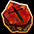
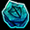
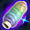
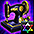
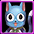

コスチューム
キャラクターの見た目を変化させ、コスチュームの種類によっては追加でステータス・能力上昇などの恩恵をうけられるシステムです。
「クレスト」と呼ばれるアイテムをコスチュームに装着することで様々な能力を付与できます。
クレストを嵌めるスロットの色は変換可能で、好きな枠にすることで様々なクレストの組み合わせを装着できます。
| 目次 | ||
|---|---|---|
▼コスチューム |
▼見た目一覧 |
 ▼クレスト一覧 |
 ▼クレストシステム |
 ▼コス強化 |
 ▼秘奥シリーズ |
▼クレスト分解 |
▼ソケット変換 |
▼クレスト融合 |
コスチュームの種類
基本的には以下4通り。
この他にも強化コスチュームやコラボコスチューム、復帰者コスチュームなどがあります。
クレストというアイテムをスロットにはめこみ、さらにキャラクターを強化できます。
各職業専用のアイテムであり、全職業共通のコスチュームはありません。
コスチュームインベントリに入っている状態では取引不可。（取引可にするには別途課金アイテムが必要）
コスチュームは、入手すると自動的にコスチュームウィンドウに保管されます。
見た目を「通常」「コスチューム」モードに切り替えを行うことができますが、コスチュームに付随されている性能はボタンを「OFF」にしてもキャラクターの能力に反映されます。
各コラボごとのコスチュームの性能は以下の通りです。
| コラボタイトル | 全ステ＋ | 経験値 | 備考 | |
|---|---|---|---|---|
| アカメが斬る！ 2014/11/25～ 12/9 フェアリーテイル 2014/12/9～ 12/24 |
 |
+20 | +10% | |
| ガッチャマン クラウズ インサイト 2015/9/17～ 10/8 2019/11/6～11/27 |
+20 | +10% |
キャンペーン詳細 Plusの場合、 能力値+100、経験値+20％ |
|
| 涼宮ハルヒの憂鬱 2016/12/20～ 2017/1/31 |
+20 | +10% |
キャンペーン詳細 Plusの場合、 能力値+100、経験値+20％ |
|
| Fate/stay night [Heaven's Feel] 2017/10/14～ 2017/11/15 |
+20 | +10% |
キャンペーン詳細 Plusの場合、 能力値+120、経験値+15％ |
|
| [参考] 星の預言者 2021/02/24～ 2021/03/24 |
+40 | +20% |
アプデ情報 クレストスロット＋１(何でも可) |
|
『plus』と書かれたコスチュームは、期間限定のロトボックスからランダムで入手可能。ステータス＋や経験値＋が異なります。
コスチュームの色を変更、もしくは取引する場合、以下課金アイテムが必要です。

コスチューム染色剤は、「イラストコンテストコスチューム」、「コラボレーション企画コスチューム」などの色固定コスチュームには使用不可。
取引可能になったコスチュームは以下のようにして他プレイヤーに販売できたりします。

コスチュームの装着方法

・メインスロット（上図の黄色い枠部分）
装着したコスチュームの能力値と外見をキャラクターに適用。
ただし、外見スロットにコスチュームが装備されている場合、クレストを含む能力値のみ適用。
・外見スロット（上図の青い枠部分）
装着したコスチュームの外見を最優先でキャラクターに適用します。
コスチュームの能力値やクレストはキャラクターに適用されません。
ソケット/クレスト
コスチュームのソケットに「クレスト」と呼ばれるアイテムを装着することにより、「クレスト」のオプションがコスチュームに付与されます。
「クレスト」は、
・攻撃オプション系の赤色
・防御オプション系の青色
・ステータス上昇オプション系の黄色の3種類が存在します。
また、それぞれのクレストには、能力値によって、
最上級／上級／中級／下級のクレストが存在します。

①コスチュームを「右クリック」して「ソケットウィンドウを開く」をクリック
②装着したいクレストを、クレストと同色のソケットにドラッグ＆ドロップ
③「装着」ボタンを押す
※装着したクレストは取り外せません。
※既にクレストが装着されている「ソケット」に、さらにクレストを装着すると上書きされます。
既に装着されていたクレストは消えてしまいますのでご注意ください。
クレストの性能一覧はこちら
コスチューム強化
2021/02アプデより追加。プレミアムコスチュームのみ、最大10段階までの強化を行えます。
コスチュームの強化には「5色のかせ糸」が素材として必要となります。

「5色のかせ糸」はプレミアム等級、スペシャル等級のコスチュームを分解した際に入手できます。
※スペシャルコスチュームとは、プレミアムコスチュームの10段階強化(最大)のこと。
| 等級 | 五色のかせ糸獲得数 |
|---|---|
| プレミアム | 25～27 |
| スペシャル | 100～102 |
コスチュームはコスチュームウィンドウ下部にある[強化]ボタンより強化できます。

※コスチューム強化時にセットされているクレストは維持されます。
※強化失敗時、強化値のレベルダウンはございません。
※強化値+10のスペシャルコスチュームは、「コスチューム保管ボックス」に入れられません。
※[Plus]が付いたコラボコスチュームは強化できません。

10段階になるとスロットウィンドウに「多色クレストスロット」枠が追加されます。
(全てのクレストがセット可能)
各段階での性能・強化成功確率・期待値等の表は以下。
| 区分 | 基本 | ＋1 | ＋2 | ＋3 | ＋4 | ＋5 | ＋6 | ＋7 | ＋8 | ＋9 |
スペシャル （＋10） |
秘奥 （＋S） |
|---|---|---|---|---|---|---|---|---|---|---|---|---|
| 五色のかせ糸必要数 | 5 | 5 | 5 | 10 | 10 | 15 | 15 | 20 | 25 | 30 | 100 | |
| すべての能力値 | 20 | 22 | 24 | 26 | 28 | 30 | 32 | 34 | 36 | 38 | 40 | 40 |
| 狩りの時経験値増加 | 10％ | 11％ | 12％ | 13％ | 14％ | 15％ | 16％ | 17％ | 18％ | 19％ | 20％ | 20％ |
| 強化成功確率 | - | 100％ | 90％ | 90％ | 80％ | 80％ | 60％ | 60％ | 40％ | 20％ | 10％ | 10％ |
| かせ糸累計期待値 | - | 5 | 10.5 | 16.1 | 28.6 | 41.1 | 66.1 | 91.1 | 141 | 266 | 566 | 1566 |
秘奥のスペシャルコスチューム
コスチュームを9から10段階へ進化させる際に、低確率で秘奥のスペシャルコスチューム「星の預言者シリーズ」へと変化することがあります。「星の預言者シリーズ」はコスチュームの基本配色6色の他に、一定の確率で変更される特殊色が5色が存在します。
特殊色に変更するには普通の染色剤とは異なる「多彩なコスチューム染色剤」が必要となります。
9から10段階への強化以外で秘奥のスペシャルコスチュームに変化させるには[多様の裁縫道具]が必要となります。
期間限定イベントなどで販売されています。

多様の裁縫道具は右クリックで使用して、以下画面から[合成]を押すことで実行できます。
※裁縫道具・コス+10とは別に五色のかせ糸が100個必要

成功すると[星の預言者]シリーズに進化します。
失敗すると、コラボ以外の職業内コスチュームにランダムで変化します。
合成の成功/失敗にかかわらず、装着されたクレストは維持されます。
星の預言者シリーズの性能はスペシャルコスチュームと同一です。見た目のみ変更されます。
秘奥のコスチュームの色を変更するには「多彩なコスチューム染色剤」が必要です。
クレスト分解システム
クレスト分解は、不要なクレストを分解して魔力パウダーを入手するシステムです。魔力パウダーは、クレストを新規作成するクレスト融合や、コスチュームのソケット色を変えるソケット変換で使用します。
| クレスト分解の概要 | |
|---|---|
| 利用場所 | コスチュームUI下部の[分解]ボタン |
| 主な報酬 | 魔力パウダー ※分解するクレストの等級によって獲得数が変わります。 |
| 登録方法 |
分解したいクレストをインベントリからダブルクリックして登録できます。 [自動登録]を使う場合、歯車ボタンから対象にするクレスト等級を事前に指定できます。 一度に登録できるクレストは最大50個です。 |
| 注意 |
分解対象に選択されたクレストは、インベントリ内で灰色がかった表示になります。 保護されているクレストは自動登録の対象にならず、ダブルクリックでもセットできません。 インベントリに空きスペースがない場合、分解は失敗します。 |
| アイテム | 用途 |
|---|---|
 魔力パウダー |
クレスト分解で入手できる素材。 クレスト融合では1個作成につき30個、ソケット変換では1回につき50個を使用します。 |

分解で得られる個数など、確率・数量の詳細は確率情報（コスチューム分解）を参照してください。
ソケット変換システム
ソケット変換は、コスチュームのクレストソケット色をランダムで変更するシステムです。任意の色のクレストをより多く装着したい場合に使います。
| ソケット変換の条件 | |
|---|---|
| 費用 | 魔力パウダー 50個 + 1億Gold |
| 対象コスチューム | プレミアム / ユニーク / スペシャル / 多様の裁縫道具で変化した特殊シリーズ |
| 実行条件 | 対象ソケットにクレストが装着されていないこと |
| 結果 | 決められたソケットパターンの中から、確率に応じてランダムに変更されます。 |
| 関連アイテム | 説明 |
|---|---|
|
黄金クレスト抽出鋏 |
デュアルグレードを含む全等級のクレストを抽出できるアイテムです。 通常のクレスト抽出鋏と同時に所持している場合、デュアル以外の抽出では通常のクレスト抽出鋏が優先して消費されます。 抽出時は確認ウィンドウに表示される使用アイテム名を確認してください。 |
■ソケット変換の流れ
1. ソケットにクレストがセットされていないことを確認し、[変換]ボタンを押します。
2. 確認ウィンドウに必要な魔力パウダー数とGoldが表示されます。問題なければ[はい]を押します。
3. ソケットの種類が、設定されたパターンからランダムに変更されます。
※ソケットにクレストが嵌っている場合、変換は行えません。
※[変換]ボタンがないコスチュームはソケット変換を行えません。
※ソケット変換後に各種裁縫道具箱を使用してコスチュームデザインが変化しても、ソケットパターンは維持されます。
ソケットパターンごとの出現率は6ソケット / 7ソケットの確率情報を参照してください。
クレスト融合システム
クレスト融合は、魔力パウダーを消費して新しいクレストを作成するシステムです。2023年実装の紫クレストは、この融合から入手できます。
| クレスト融合の概要 | |
|---|---|
| 利用素材 | 魔力パウダー |
| 必要数 | クレスト1個作成につき30個 |
| 作成数 | 1回につき1～10個まで指定可能 例：10個作成する場合は魔力パウダー300個が必要 |
| 結果 | [融合]後、作成されたクレスト一覧が表示されます。表示されたクレストはその時点でインベントリに獲得されています。 |
■クレスト融合の流れ
1. [≡]ボタンから、融合で獲得できるクレスト一覧を確認できます。
2. 作成したい個数を1～10の範囲で指定します。
3. [融合]ボタンを押すと、魔力パウダーを消費してクレストが作成されます。

■紫クレストについて
紫クレストは紫色のソケットにのみ装着できます。既存色のソケットには装着できません。
一方で、紫色のソケットには既存色のクレストも装着できます。
紫クレストはコスチューム分解やクレスト合成箱からは入手できず、クレスト合成箱の素材として使用できます。
ただし、デュアルグレードの紫クレストはクレスト融合では入手できません。
■クレスト保護
クレストには右クリックで設定できる[保護]機能があります。
保護されたクレストはソケットへの装着は可能ですが、クレスト分解の自動登録対象にならず、分解や割機の対象にもできません。
ソケットから抽出されたクレストは、保護が解除された状態でインベントリに戻ります。
参考：[公式サイト] コスチュームシステム